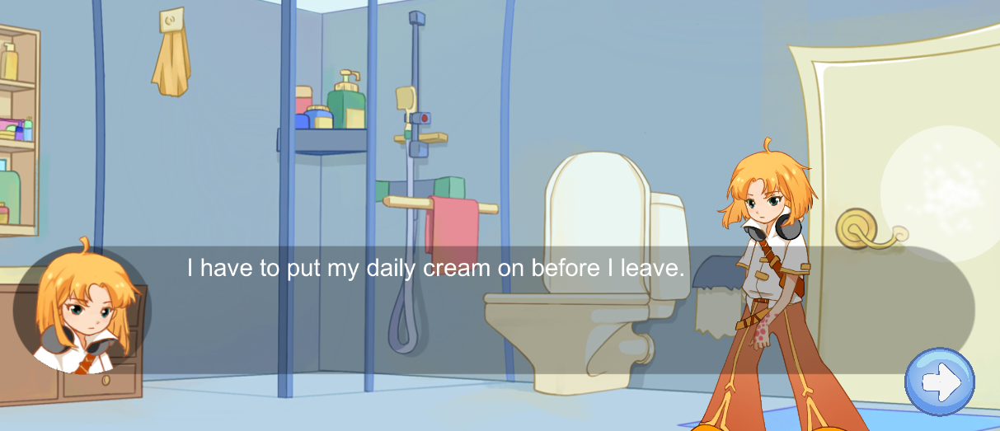

03
life of kim
- project manager, programmer
- code, game design
- ca. 3 months
A collaboration between University of Skövde and Sahlgrenska University Hospital
with the purpose of creating a serious game for people with psoriasis with the goal of educating them about healthy habits to treat their condition.
The game is called Life of Kim and it presents, as the title suggests, Kim, who is a teenager who loves gaming, and as a side note, has psoriasis. Her goal is to earn money to participate in a gaming contest, which can be done by playing mini games. As for the serious part, the game transmits information about psoriasis, its treatment and healthy habits through the dialogues and mini games.
In this project my main role was being the project manager. This was my first time in such position and even though the beginnig was hard, I asked for help and support and as time passed I became more and more confident in my role and myself in general. I have planned the meetings: What is our main goal? What is our goal today/this week? What do we have? What needs to be done? Who does what?. Also kept track of the requirements and our progress, was in contact with the client. Besides managing the work and plans, I have helped with implementing the game into Unity based on the prototype in Deig. These tasks included creating the main menu, the dialogue system with the help of Bolt and doing other smaller tasks, such as including audiofiles into the dialogues.
Life of Kim is mostly a narrative game spiced up with some minigames. The mechanics include walking around (by either tapping/clicking anywhere on the screen or the buttons of interactible objects) and interacting with objects or other characters, lastly, playing and solving minigames.
The game has various locations with tasks waiting. We chose a narrative game because we thought that would be the best way of transmitting the message and information regarding this condition to the players. The player is informed about various things both by the narrator and other NPCs (mother, friend), which functions mostly as a feedback system (e.g. "you shouldn't be afraid to wear clothes that show the skin irritation", "healthy food choices can milder your symptoms"). The choices the player takes influences their energy level, which can either increase or decrease - thus, by choosing the "wrong" things, they might not have the energy to complete various tasks later on.
Takeaways
tried myself in the role of a leader
organizational skills
insight and knowledge regarding prototyping
communicating and working in a team
familiarized myself with working with unity
On our meetings with the client, they were content and excited about the game, and it got positive feedback and was welcome by several people. I have participated as one of the representatives of the game at meetings with the client and other doctors/professionals. We got the opportunity to present our prototype and game idea at a Regional Meeting for doctors, in December 2021.